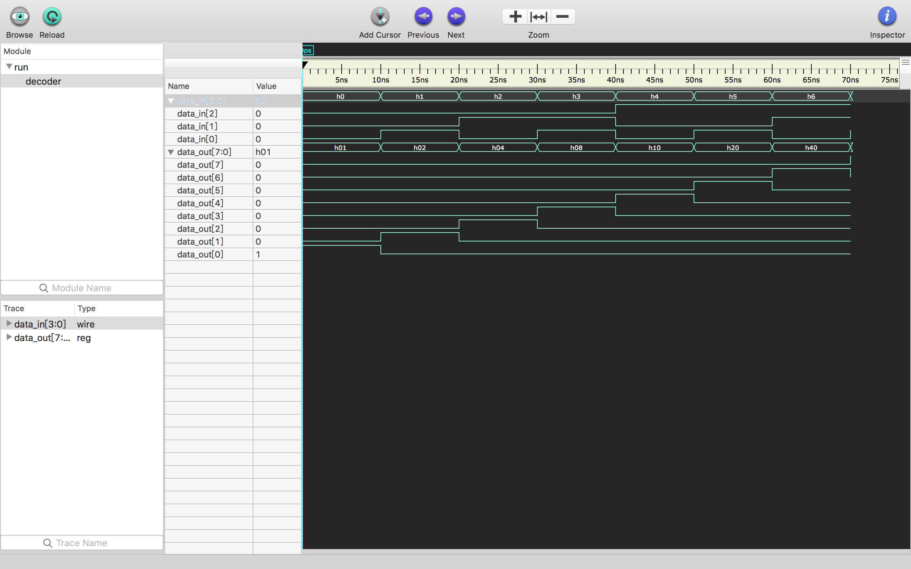

译码器
译码器是电子技术中的一种多输入多输出的组合逻辑电路，负责将二进制代码翻译为特定的对象（如逻辑电平等），功能与编码器相反。译码器一般分为通用译码器和数字显示译码器两大类。 ——维基百科
3-8逻辑译码器
是一种简单的$n$线-$2^n$线BCD译码器。
8个寄存器组成的简单CPU会使用指令译码器中的3线－8线逻辑译码器来选择寄存器文件的源寄存器并输出到ALU以及目的寄存器中，以接受ALU的输出。 ——维基百科

完成的任务
大概就是把三位二进制数翻译为对应的十进制数，哪根线是高电平就是几，有点像one hot编码的感觉。
真值表
| S0 | S1 | S2 | m0 | m1 | m2 | m3 | m4 | m5 | m6 | m7 |
|---|---|---|---|---|---|---|---|---|---|---|
| 0 | 0 | 0 | 1 | 0 | 0 | 0 | 0 | 0 | 0 | 0 |
| 0 | 0 | 1 | 0 | 1 | 0 | 0 | 0 | 0 | 0 | 0 |
| 0 | 1 | 0 | 0 | 0 | 1 | 0 | 0 | 0 | 0 | 0 |
| 0 | 1 | 1 | 0 | 0 | 0 | 1 | 0 | 0 | 0 | 0 |
| 1 | 0 | 0 | 0 | 0 | 0 | 0 | 1 | 0 | 0 | 0 |
| 1 | 0 | 1 | 0 | 0 | 0 | 0 | 0 | 1 | 0 | 0 |
| 1 | 1 | 0 | 0 | 0 | 0 | 0 | 0 | 0 | 1 | 0 |
| 1 | 1 | 1 | 0 | 0 | 0 | 0 | 0 | 0 | 0 | 1 |
实现
最简单的方案就是直接打表：
1 | module decode3_8 (output reg [7:0] data_out,input [2:0] data_in); |
波形效果
